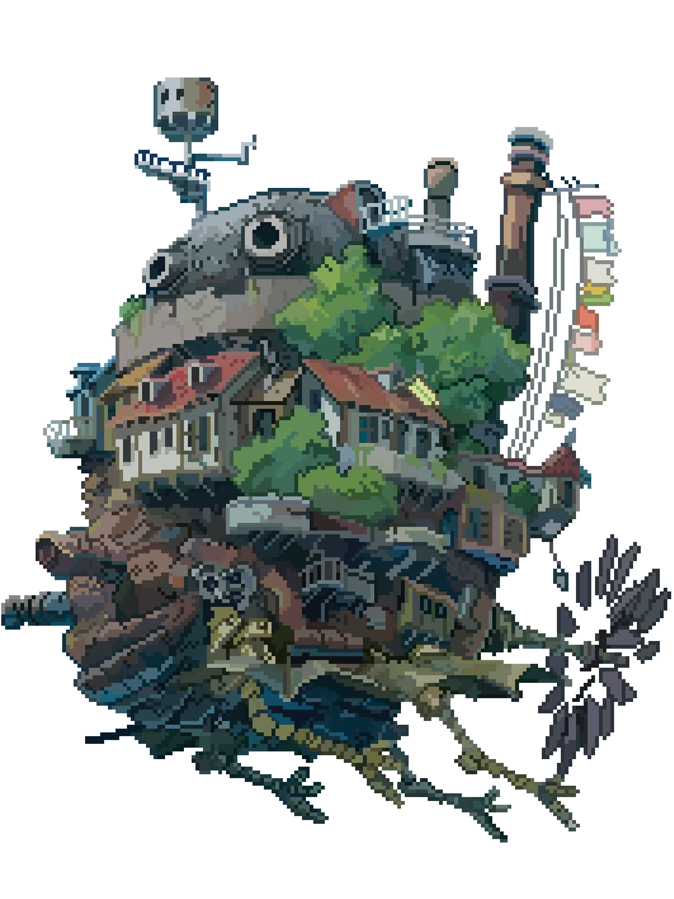

Introduction
L'art contemporain est un courant artistique qui englobe les œuvres d'artistes plasticiens réalisées après 1945. Ce mouvement succède chronologiquement à l'art moderne (1860-1945). Il existe des différences de points de vue quant à ce qui relève ou non de cet art : les limites temporelles ne font pas consensus d'une part, et la nature des œuvres qui relèvent de ce mouvement d'autre part. En cela, une pièce d'art peut être réalisée durant la période contemporaine, mais potentiellement ne pas relever de ce courant artistique. Dans cette idée, l'art contemporain désignerait des pratiques esthétiques et réalisations d'artistes revendiquant « une avancée dans la progression des avant-gardes »1 et une transgression des frontières entre les domaines artistiques (dépassant la frontière de ce que le sens commun considère comme étant de l'art, c'est-à-dire les arts plastiques, en expérimentant le théâtre, le cinéma, la vidéo, la littérature…)2, ou une transgression des « frontières de l'art telles que les conçoivent l'art moderne et l'art classique »3.

Quelques artistes
Hayao Miyazaki est un artiste contemporain de renom, particulièrement dans le domaine de l'animation. Il est surtout connu pour son travail en tant que réalisateur, scénariste, animateur et cofondateur du Studio Ghibli, l'un des studios d'animation les plus acclamés au monde. Les films de Miyazaki sont appréciés pour leur narration complexe, leurs personnages riches et leurs visuels époustouflants. Certains de ses œuvres les plus célèbres incluent "Mon voisin Totoro", "Le Voyage de Chihiro", "Princesse Mononoké" et "Le Château ambulant". Ses films explorent souvent des thèmes tels que l'écologie, l'importance de l'empathie et de la connexion, ainsi que le conflit entre la technologie et la nature. Le style narratif unique de Miyazaki et sa capacité à créer des mondes fantastiques mais profondément relatables lui ont valu une base de fans dévouée à travers le monde ainsi que de nombreux prix et distinctions. 
Les Œuvres Emblématiques
Les œuvres de la Renaissance sont parmi les plus célèbres et les plus influentes de l'histoire
de l'art occidental.
Parmi les exemples les plus emblématiques: